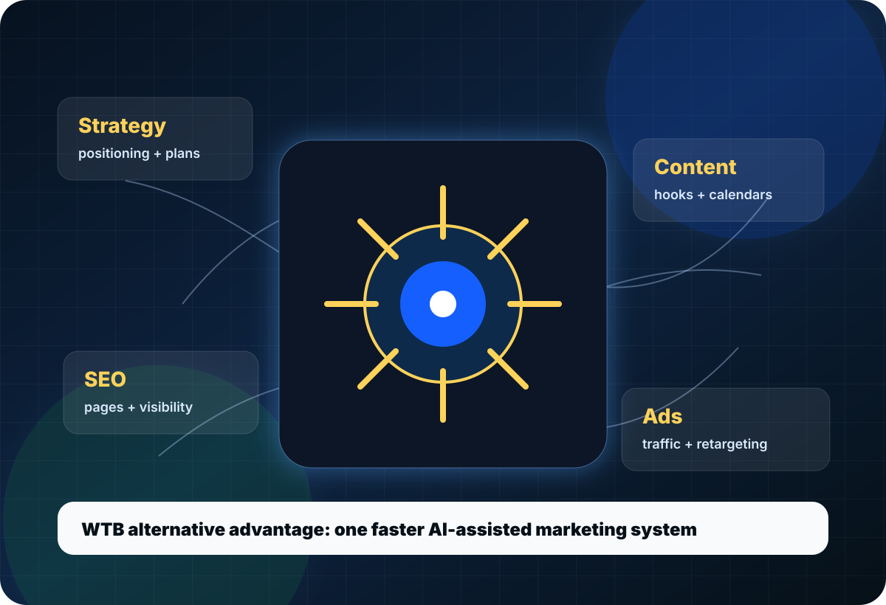
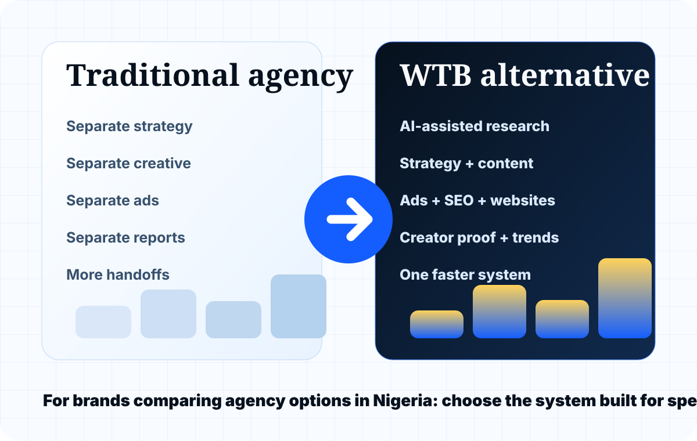

Wild Fusion alternative
For brands searching for a Wild Fusion alternative in Nigeria, WTB is positioned for leaner execution across strategy, content, paid ads, SEO, websites, creator campaigns, and reporting.
Agency alternatives
If you are comparing agencies like Wild Fusion, Slarrt, or a traditional digital marketing agency, WTB gives you a different path: one connected system for strategy, content, ads, SEO, websites, creators, X trends, and reporting.

What people are really comparing
Some brands need a large traditional agency. Some need a creative studio. Some need a faster AI-assisted marketing partner that can move from brief to execution without waiting weeks for every small step.
For brands searching for a Wild Fusion alternative in Nigeria, WTB is positioned for leaner execution across strategy, content, paid ads, SEO, websites, creator campaigns, and reporting.
For teams comparing Slarrt-style creative marketing support, WTB adds an AI workflow layer to help campaign planning, production, optimization, and reporting move faster.
Instead of splitting work across strategy, social media, web, SEO, and ads vendors, WTB helps connect the full system so each channel learns from the others.
The WTB difference
WTB does not sell AI for the sake of noise. We use AI where it improves research, ideation, copy direction, search planning, creative testing, reporting, and optimization. Human strategy still decides what matters.

Alternative by need
For brands that need keyword planning, local SEO, page structure, content direction, and Google Search Console readiness.
For brands that need Search, Display, YouTube, Performance Max, Demand Gen, Shopping, and remarketing support.
For brands that need content planning, captions, campaign ideas, posting support, creator briefs, and monthly reporting.
For businesses that need a website or landing page that supports leads, sales, SEO, analytics, and campaign conversion.
Compare options
If you are comparing agencies, send the brief. We will recommend whether you need strategy, execution, SEO, ads, website work, creator support, or a full system.